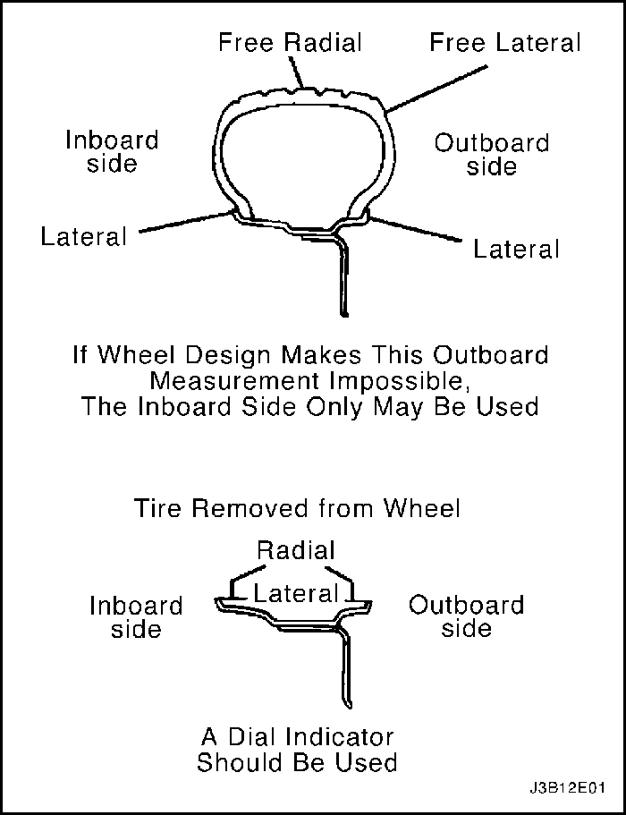
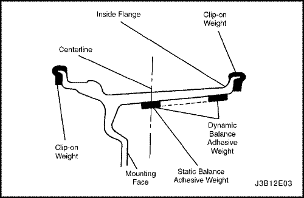
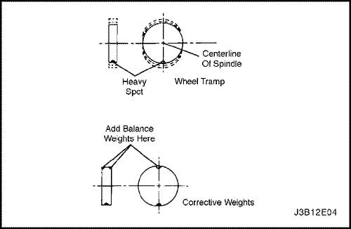
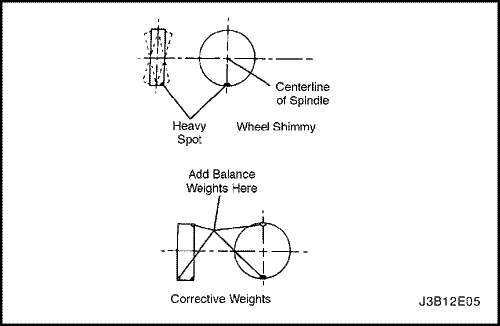

SECCIÓN 2E
NEUMÁTICOS Y RUEDAS
ESPECIFICACIONES
Especificaciones de tamaño y presión de los neumáticos
Presión de llenado con carga completa
| Neumáticos | Rueda | Delantero | Trasero |
| . | . | kPa | psi | kPa | psi |
| 175 / 70R14 | 5,5J x 14 (acero) | 205 | 30 | 205 | 30 |
| 175 / 70R14 | 5,5J x 14 (aleación) | 205 | 30 | 205 | 30 |
| 185 / 65R14 | 5,5J x 14 (acero) | 205 | 30 | 205 | 30 |
| 185 / 65R14 | 5,5J x 14 (aleación) | 205 | 30 | 205 | 30 |
| 195 / 55R15 | 6J x 15 (acero) | 205 | 30 | 205 | 30 |
| 195 / 55R15 | 6J x 15 (aleación) | 205 | 30 | 205 | 30 |
| 195 / 55R15 | 6J x 15 (aleación, deportivo) | 205 | 30 | 205 | 30 |
Especificaciones de conversión de presión de inflación de neumáticos
kPa | Psi | kPa | Psi | kPa | Psi |
140 | 20 | 185 | 27 | 235 | 34 |
145 | 21 | 190 | 28 | 240 | 35 |
155 | 22 | 200 | 29 | 250 | 36 |
160 | 23 | 205 | 30 | 275 | 40 |
165 | 24 | 215 | 31 | 310 | 45 |
170 | 25 | 220 | 32 | 345 | 50 |
Especificaciones para el apriete del afianzador
| Aplicación | N•m | Lb-pies | Lb-pulg. |
| Tuerca de rueda (rueda de aleación) | 120 | 88 | - |
| Tuerca de rueda (rueda de acero) | 120 | 88 | - |
DIAGNÓSTICO
Desvío de la rueda
Medir el desvío de la rueda con un indicador de carátula preciso. Las mediciones se pueden hacer ya sea con las ruedas montadas en el vehículo o no, usando una superficie de montaje precisa, tal como un calibrador de ruedas. Las mediciones se pueden hacer con o sin el neumático montado en la rueda.
Medir el desvío radial y el desvío lateral en ambos bordes, interior y exterior de los rines. Con el indicador de carátula firmemente asentado junto al conjunto de rueda y neumático, girar lentamente la rueda una revolución y registrar la lectura del indicador. Si alguna medición excede las especificaciones siguientes y hay vibración que la calibración o balanceo de la rueda no pueda corregir, se debe reemplazar la rueda. No hacer caso de las lecturas del indicador causadas por puntos de soldadura, capas de pintura o rayaduras.
Ruedas de acero
- Desvío radial: 0,8 mm (0,03 pulg.)
- Desvío lateral: 1,0 mm (0,04 pulg.)
Ruedas de aleación
- Desvío radial: 0,25 mm (0,01 pulg.)
- Desvío lateral: 0,25 mm (0,01 pulg.)
Medir el desvío radial libre en el centro del piso del neumático. El piso puede ser rebajado para presentar una superficie lisa. Medir el desvío lateral libre en el borde exterior del neumático cercano al piso de éste.



MANTENIMIENTO Y REPARACIÓN
SERVICIO EN EL VEHÍCULO

Rueda
Procedimiento de extracción
- Aflojar las tuercas de rueda.
- Izar y soportar adecuadamente el vehículo.
- Retirar las tuercas de rueda .
Aviso: Nunca se debe utilizar calor para aflojar una rueda apretada. Esto puede acortar la vida de la rueda, de las tuercas de la rueda y de los cojinetes. La fuerza excesiva como martillar la rueda o el neumático, también puede causar daños y no se recomienda. Un suave golpeteo en el lado de la rueda con la mano o con un martillo de caucho es aceptable.
- Retirar la rueda.
La dificultad para quitar las ruedas del vehículo puede deberse a material extraño o a un apretado ajuste entre el orificio central de la rueda y el buje o el rotor. Estas ruedas sólo se pueden quitar
- Volver a apretar las tuercas de rueda de la rueda afectada y después aflojar las tuercas de rueda dos vueltas.
- Bajando el vehículo y meciéndolo de lado a lado tan fuerte como sea posible, usando el peso de una o más personas para aflojar la rueda.
- Levantando el vehículo y quitando la rueda.
Precaución: No permitir que el aceite penetrante entre a las superficies verticales entre la rueda y el tambor (o rotor) porque el aceite penetrante en esta área puede hacer que se afloje la rueda al conducir el vehículo, causando pérdida de control y un accidente con lesiones.
El aceite penetrante no es efectivo para quitar ruedas apretadas. Sin embargo, si se llega a utilizar, debe aplicarse una pequeña cantidad y sólo en el área central de la rueda.
Procedimiento de instalación
Aviso: Antes de instalar las ruedas, retirar cualquier acumulación de corrosión en la superficie de montaje de la rueda y del tambor de freno o de la superficie de montaje del rotor, rascando y cepillándolas con un cepillo de cerdas metálicas. Instalar las ruedas sin un buen contacto metal a metal en las superficies de montaje puede hacer que las tuercas de la rueda se aflojen, lo que puede permitir que más tarde la rueda se salga mientras el vehículo se mueve. Las tuercas de las ruedas deben apretarse en secuencia y al par de apriete correcto para evitar deformar la rueda, el tambor de freno o el rotor.
- Montar la rueda.
- Instalar las tuercas de rueda en la secuencia mostrada. No apretar las tuercas de las ruedas
- Descender el vehículo.
Apretar
Apretar las tuercas de las ruedas a 120 N•m (88 lb-pie.)

Equilibrio con vehículo en marcha
Equilibrar las ruedas con el vehículo en marcha ayuda a corregir las vibraciones causadas el desbalanceo del tambor de freno, rotor y embellecedores de la rueda.
Aviso: No permitir que la suspensión delantera cuelgue libremente. Cuando el eje de tracción gira en un ángulo extremo, pueden ocurrir vibraciones adicionales, así como daños a los sellos y articulaciones.
- Durante el equilibrio con el vehículo en marcha, no retirar los pesos de equilibrio del balanceador dinámico fuera del vehículo.
- Si se requiere más de una onza de peso adicional, dividir el peso entre los bordes interno y externo de la rueda.
Precaución: No girar las ruedas de tracción a más de 55 km/k (35 mph) según lo indique el velocímetro. Este límite es necesario debido a que el velocímetro indica la mitad de la velocidad real cuando una de las ruedas de tracción está girando y la otra rueda de tracción está parada. Se pueden causar lesiones personales y daños al girar las ruedas a altas velocidades.
- Usar el motor para hacer girar la rueda de tracción y los conjuntos de las ruedas.
REPARACIÓN DE LA UNIDAD
Porosidad en ruedas de aleación
No están aprobadas las reparaciones de las ruedas que utilizan soldadura o calor.
- Izar y soportar adecuadamente el vehículo.
- Retirar la rueda. Ver "Ruedas" en esta sección.
Precaución: Para evitar lesiones serias, no se debe estar parado sobre el neumático al inflarlo, ya que la junquilla se puede reventar al golpear el borde de seguridad. No exceder 275 kPa (40 psi) de presión de aire en ningún neumático si éstos no se han asentado en los bordes de la rueda. Si con 275 kPa (40 psi) no se han asentado los bordes del neumático, debe desinflarse. Volver a lubricar los bordes. Inflar de nuevo el neumático. Un inflado excesivo puede hacer que se rompa el borde y causar lesiones de gravedad.
- Localizar las áreas con fugas inflando el neumático a 345 kPa (50 psi) y sumergiendo el neumático y el conjunto de la rueda dentro de un baño de agua.
- Marcar las áreas con fugas y desmontar el neumático de la rueda.
- Rascar la superficie interior de la rueda en el área de la fuga con papel de lija de arenisca Nº 80. Limpiar el área de fuga con un limpiador de uso general.
- Aplicar una capa de 3,3 mm (0,13 pulg.) de espesor de adhesivo/sellador al área de la fuga. Dejar secar durante 12 horas.
- Instalar el neumático en la rueda. Inflar el neumático a 345 kPa (50 psi) y comprobar si hay fugas igual que en el paso 3.
- Ajustar la presión de los neumáticos según las especificaciones. Ver "Especificaciones de tamaño y presión de neumáticos" en esta sección.
- Equilibrar la rueda. Ver "Equilibrio de ruedas y neumáticos" en esta sección.
- Instalar la rueda. Ver "Ruedas" en esta sección.
- Descender el vehículo.
Aplicación de nuevo acabado para ruedas de aleación
En la superficie de ruedas de aleación fundida de equipo original, se aplica una capa protectora de color claro. Si se daña o se quita esta capa protectora, puede ocurrir degradación de la superficie. Esto puede ocurrir en algunas instalaciones de lavado automático de coches que utilizan cepillos de cerdas con puntas de carburo de silicio para limpiar las áreas blancas de los neumáticos. Una vez que se ha dañado la capa protectora, la exposición a limpiadores cáusticos o a la sal en los caminos empeora la degradación de la superficie. El siguiente procedimiento detalla cómo quitar, limpiar y volver a colocar la capa protectora de las ruedas de aleación.
Precaución: Para evitar lesiones personales graves, se deben seguir las recomendaciones del fabricante y las precauciones al usar estos materiales.
Materiales necesarios:
- Sustancia química para limpiar y acondicionar aleaciones Prep Nº 33 de Amchem Alumi, Nº de catálogo DX533 ó equivalente.
- Capa protectora química para aleaciones Amchem Alodine Nº 1001, Nº de catálogo DX50T ó equivalente.
- Uretano acrílico claro Dittzler Delclear, catálogo Nº DAU-75 o equivalente.
- Aditivo Ultra-uretano Ditzler Delthane, catálogo Nº DXR-80 o equivalente.
Antes de reparar los daños a las aleaciones o a la capa protectora clara, se deben preparar las ruedas y neumáticos.
- Retirar la rueda del vehículo.
- Marcar la ubicación de los pesos exteriores y retirarlos.
- Lavar la rueda dentro y fuera con un limpiador de propósito general a base de agua. Quitar la grasa y aceite con un solvente limpiador.
- Cubrir la rueda antes de pintarla.
- Utilizando papel de lija seco o mojado de arenisca 400 , lijar las áreas pintadas que no requieren repintarse. La lijada ayuda a la mejor adhesión de la capa protectora.
Daño a la aleación en la superficie de la rueda
- Montar la rueda en un torno y hacer girar el conjunto lentamente.
- Lijar la rueda con un bloque o almohadilla. Sostener el bloque o almohadilla plano sobre la superficie de la rueda y lijar lentamente hacia delante y hacia atrás desde el centro hacia los bordes externos del neumático para quitar lo dañado. Utilizar los siguientes calibres de arenisca para la lija, en el orden en que se enumeran:
- arenisca 80.
- arenisca 150.
- arenisca 240.
Daños a la capa protectora en ruedas despintadas
- Aplicar el removedor químico Amchem Alumi Prep Nº 33. Usar un pincel para detallado de 1/4 de pulgada para aplicar el removedor alrededor de todo el perímetro y en las áreas de picos.
- Quitar el removedor de acuerdo a las recomendaciones del fabricante.
Precaución: Para evitar lesiones personales graves, no se debe utilizar el motor para hacer girar las ruedas mientras se lijan.
- Lijar la rueda con papel de lija de arenisca 240, girando la rueda en un torno de baja velocidad o montando la rueda en el coche y haciéndola girar con la mano. Al lijarse, se restaura la apariencia de maquinado y ayuda a la adhesión.
Después de reparar los daños de la aleación o la capa protectora, debe volver a colocarse la capa protectora en las ruedas.
Procedimiento para volver a colocar la capa protectora
Precaución: Para evitar lesiones severas al aplicar cualquier sistema de pintura de dos componentes, se deben seguir las precauciones específicas proporcionadas por el fabricante de la pintura. De no seguir estas precauciones, se corre el riesgo de causar irritación a los pulmones y una reacción respiratoria alérgica.
- Limpiar la superficie.
- Empapar la rueda con Alchem Alumi Prep Nº 33 o equivalente por 1 a 3 minutos. Enjuagar la rueda con agua y secarla con aire.
- Empapar la rueda con Amchem Alodine Nº 1001 o equivalente por 1 a 3 minutos. Enjuagar la rueda con agua y secarla con aire.
- Terminar con Uretano Ditzler Delclear y aditivo Diltzer Ultra-Urethane o equivalente, aplicando tres capas.
- Primera capa - rociar una capa en aerosol; dejar secar.
- Segunda capa - Rociar con aerosol o pintar una capa ligera; dejar secar.
- Tercera capa - Rociar con aerosol o pintar una capa gruesa y húmeda; dejar secar.
- Dejar secar el uretano por 24 horas o hacer un flash por 30 minutos y forzar el secado a 60°C (140°F) por 30 minutos. Dejar enfriar el uretano por 5 minutos antes de montar la rueda en el vehículo.
Equilibrio con vehículo parado
Realizar equilibrio de ruedas con un balanceador electrónico fuera del vehículo. El balanceador es fácil de usar y proporciona el equilibrio estático y dinámico. A diferencia del equilibrio con el vehículo en marcha, el balanceador fuera del vehículo no corrige los desequilibrios causados por el tambor o el rotor. Esta desventaja se compensa por su precisión (generalmente menor a 1/8 de onza). Sujete la rueda en el balanceador con un cono a través del lado posterior del orificio central y no a través de los orificios de los tornillos.
Neumáticos correctivos no uniformes
Hay dos formas de corregir las ruedas equilibradas correctamente pero que aún vibran. Un método utiliza una máquina automática que carga el neumático y pule pequeños pedazos de caucho de los puntos altos de las dos filas externas de dibujo. La corrección con este método generalmente es permanente y, si se hace correctamente, no afecta de manera significativa la apariencia o la vida del dibujo del neumático. Rebajar el neumático con una máquina de tipo navaja no se recomienda debido a que reduce sustancialmente la vida del dibujo y frecuentemente no corrige el problema de forma permanente.
Otro método es desmontar el neumático y rotarlo 180 grados en el rin. Esto se debe hacer sólo en conjuntos de rueda y neumático que se sabe que son causa de vibración, ya que el método también puede hacer que los conjuntos buenos comiencen a vibrar.
Montaje de adaptación de ruedas y neumáticos
Los neumáticos y ruedas son montados apareados en la planta de ensamble. El montaje apareado alinea la parte radialmente más rígida del neumático, o punto alto, con el radio más pequeño, o punto bajo, de la rueda.
El punto alto del neumático está marcado originalmente con una marca de pintura roja o con una etiqueta adhesiva en la pared externa.
El punto bajo de la rueda se encuentra en la ubicación del pivote de la válvula.
Antes de desmontar un neumático de su rueda, se debe marcar una raya en el neumático en donde está la válvula, para asegurar que se volverá a montar en la misma posición.
Los neumáticos de recambio que son de calidad del equipo original, deben tener sus puntos altos y bajos marcados de la misma forma.
Montaje y desmontaje de neumáticos
Aviso: Utilizar una máquina de cambiar neumáticos para montar o desmontar los neumáticos. Seguir las instrucciones del fabricante del equipo. No usar herramientas manuales ni fierros para neumáticos para cambiarlos. Estas herramientas pueden dañar los bordes o los rines.
- Limpiar los asientos de los rines con un cepillo de metal o una fibra gruesa de acero para quitar lubricantes, caucho viejo y oxidación ligera. Antes de montar o desmontar un neumático, lubricar bien el área del borde con un lubricante de neumáticos aprobado.
Precaución: Para evitar lesiones serias, no se debe estar parado sobre el neumático al inflarlo, ya que la junquilla se puede reventar al golpear el borde de seguridad. No exceder 275 kPa (40 psi) de presión de aire en ningún neumático si éstos no se han asentado en los bordes de la rueda. Si con 275 kPa (40 psi) no se han asentado los bordes del neumático, debe desinflarse. Volver a lubricar el borde y volver a inflar el neumático. Un inflado excesivo puede hacer que se rompa el borde y causar lesiones de gravedad.
- Después de montar el neumático, inflarlo hasta que asienten los bordes. Nunca se debe exceder 275 kPa (40 psi) para asentar los bordes.
- Instalar el pivote de la válvula e inflar el neumático a la presión correcta. Asegurarse de que el anillo de localización fuera del borde del neumático se asoma alrededor de los bordes de la rueda en ambos lados. Este posicionamiento del neumático asegurará que se asiente el borde del mismo.
DESCRIPCIÓN GENERAL Y FUNCIONAMIENTO DEL SISTEMA
Equilibrio de ruedas y neumáticos
Hay dos tipos de equilibrio o balanceo de ruedas y neumáticos: estático y dinámico.
El equilibrio estático es la distribución igual del peso alrededor de la rueda. Los conjuntos que están estáticamente desequilibrados causan una acción de rebote que se le llama marcha pesada. Esta condición pueda causar, eventualmente, desgaste disparejo del neumático.

El equilibrio dinámico es la distribución igual de peso a cada lado de la línea central de manera que cuando el conjunto gira, no hay tendencia a que se mueva de lado a lado. Los conjuntos que están dinámicamente desequilibrados pueden causar abaniqueo de la rueda.

Precauciones generales de equilibrio
Quitar todos los depósitos de materiales extraños de la parte interior de la rueda.
Precaución: Quitar las piedras del dibujo de los neumáticos para evitar lesiones del operador durante el equilibrio girando.
Inspeccionar el neumático para detectar cualquier daño. Equilibrar la rueda de acuerdo a las recomendaciones del fabricante del equipo.
Pesos de la rueda
Si se necesitan más de 85 gramos (3 onzas) para equilibrar estáticamente la rueda, se deben dividir los pesos tan equitativamente como sea posible entre los bordes interior y exterior.
Equilibrar los conjuntos con ruedas de aleación de fábrica requiere del uso de pesos especiales recubiertos de nylon y que se puedan sujetar a la rueda. Estos pesos están diseñados para ajustar en el borde más grueso del rin de una rueda de aleación. Instalar estos pesos con un martillo de plástico.
También hay disponibles pesos adhesivos. Utilizar el siguiente procedimiento para instalar pesos adhesivos en las ruedas.
Instalación de pesos adhesivos.
- Limpiar la rueda lijándola hasta la aleación pura donde se va a instalar el peso.
- Usar un trapo limpio o toalla de papel saturada con una mezcla mitad de alcohol isopropílico y mitad de agua para tallar el sitio donde se va a instalar el peso.
- Secar el área con aire caliente. La superficie de la rueda debe estar tibia al tacto.
- Calentar el adhesivo del reverso de los pesos hasta la temperatura ambiente.
- Retirar la sienta del reverso de los pesos. No tocar la superficie adhesiva.
- Aplicar el peso de la rueda y presionarlo con la mano.
- Asegurar el peso de la rueda con una fuerza de 70-110 N (16-25 lb), aplicada con un rodillo.
Utilización de cadenas de neumáticos
Debido al limitado espacio libre entre la rueda y la carrocería en algunos vehículos, las recomendaciones para el uso de cadenas en los neumáticos se publica en el Manual del propietario. Cuando es necesario utilizar cadenas para neumáticos, la mayoría de los vehículos Daewoo actuales, requiere de cadenas para neumáticos SAE Clase "S". A estas también se les designa como cadenas Serie 1100, tipo PL. Estas cadenas están diseñadas específicamente para limitar el efecto de "vuelo" que ocurre cuando la rueda gira.
Asegurarse que sólo se utilizan cadenas de eslabones finos, las cuales sólo añaden menos de 15 mm (0,590 pulg.), incluyendo el candado, a la superficie del dibujo y a los lados interiores del neumático. Los fabricantes de cadenas para neumáticos tienen un tamaño específico de cadena para cada tamaño de neumático para asegurar un ajuste adecuado al instalarla. Asegurarse de comprar las cadenas correctas para los neumáticos en que va a usarlas. Utilizar ajustadores de caucho para reducir el sobrante de cadena o el espacio libre en las cadenas sueltas.
El uso de cadenas puede afectar adversamente la conducción del vehículo.
Cuando están instaladas las cadenas, deben observarse las siguientes precauciones.
- Ajustar la velocidad a las condiciones del camino.
- Evitar los virajes cerrados.
- Evitar frenar con las ruedas trabadas.
Para evitar daños al vehículo con las cadenas, instalar las cadenas de las ruedas delanteras tan apretadamente como sea posible. Apretarlas de nuevo después de conducir 0,4 a 0,8 kilómetros (0,3 a 0,5 millas). El uso de cadenas en los neumáticos traseros no se recomienda porque pueden hacer contacto con el vehículo y dañarlo. Si se utilizan cadenas en los neumáticos traseros, asegurarse de que hay suficiente espacio libre entre las cadenas y la carrocería. No exceder 70 km/h (45 mph) o el límite del fabricante de las cadenas, si éste es menor. Evitar topes grandes, agujeros en el camino, virajes cerrados y otras maniobras que puedan hacer rebotar las ruedas. Observe cualesquier otras instrucciones del fabricante de las cadenas que no esté en desacuerdo con las instrucciones anteriores.
Neumáticos de repuesto
En la cara lateral del neumático, cerca del tamaño del neumático, está grabado un número de especificación de criterio de rendimiento del neumático (TPC) en todos los neumáticos de equipo original. Este número de especificación garantiza que el neumático satisface las normas de funcionamiento de tracción, resistencia, dimensiones, ruido, manipulación y resistencia a la rodadura. Por lo general, se asigna un número TPC específico a cada tamaño de neumático.
Precaución: No mezclar diferentes tipos de neumáticos en el mismo vehículo, tales como neumático radial, sesgado o de cinturón sesgado excepto en emergencias, debido a que el control del vehículo puede ser afectado severamente y pueden causar pérdida del mismo.
Utilizar sólo neumáticos de recambio del mismo tamaño, rango de carga y construcción que el original. El uso de cualquier otro tamaño de neumático o tipo de construcción puede afectar seriamente la marcha, control, calibración del velocímetro/odómetro, altura libre sobre el piso del vehículo y espacio libre del neumático a la carrocería y el chasis. Esto no se aplica al neumático de repuesto que se incluye en el vehículo.
Se recomienda instalar neumáticos nuevos en pares para el mismo eje.
Si es necesario reemplazar sólo un neumático, debe usarse junto con aquel que tenga más dibujo para emparejar la acción de frenado.
Aunque pueden parecer diferentes por el diseño del dibujo, los neumáticos de diferentes fabricantes con especificaciones TPC idénticas, pueden utilizarse en el mismo vehículo.
Neumáticos para todas las estaciones
La mayoría de los vehículos está equipado actualmente con neumáticos radiales de cinturón de acero para todas las estaciones como equipo estándar. Estos neumáticos califican como neumáticos para nieve, con una calificación promedio 37 por ciento mayor para tracción en nieve que los neumáticos radiales utilizados anteriormente que no eran para toda estación. Otras áreas del rendimiento, tales como tracción en mojado, resistencia al rodamiento, vida del dibujo y retención de aire también han sido mejoradas. Esto fue causado por mejoras tanto en el diseño del dibujo como en los componentes del piso de los neumáticos. Estos neumáticos están identificados con "M + S" moldeadas en la cara lateral del neumático, después del número del tamaño. El sufijo "MS" también está moldeado en la cara lateral después del número de especificación TPC.
Los neumáticos de manejo opcional usados en algunos vehículos no son para todas las estaciones. Estos no tendrán la marca "MS" después del tamaño del neumático o del número de especificación TPC.
Neumáticos de dimensiones métricas para turismo
Actualmente, todos los vehículos Daewoo utilizan neumáticos métricos de Pasajeros (P). Los neumáticos P-métricos están disponibles en dos rangos de carga: carga estándar (35 psi máximo) y carga extra (41 psi máximo). La mayoría de los neumáticos de vehículos de pasajeros son de carga estándar.
La mayoría de los tamaños de neumáticos P-métricos no tienen neumático exactamente correspondiente de tamaño alfanumérico. Por ejemplo, un P175/70R13 no es exactamente igual en tamaño y capacidad de carga a un FR70-13. Por esta razón, los neumáticos de repuesto deben ser del mismo número de especificación TCP que los originales. Si se deben reemplazar neumáticos P-métricos con otros tamaños, consulte a un concesionario de neumáticos. Las compañías de neumáticos son las que mejor pueden recomendar el número alfanumérico más cercano a los tamaños P-métricos con su propia línea de neumáticos.
El término métrico para medir la presión de inflado de neumáticos es el kilopascal (kPa). La presión de los neumáticos puede estar impresa en kPa y psi. Una psi equivale a 6,895 kPa.
Etiqueta de neumáticos
La etiqueta de neumáticos está ubicada permanentemente en la cara posterior de la puerta del conductor y debe consultarse para la información de neumáticos. En ella se enumeran la máxima carga del vehículo, el tamaño de los neumáticos (incluyendo el de repuesto) y la presión de inflado en frío (incluyendo el neumático de repuesto).
Neumático de repuesto
El notchback, hatchback y la vagoneta vienen equipados con un neumático de repuesto de tamaño completo en un rin de acero.
Ruedas
Las ruedas deben reemplazarse si están dobladas, abolladas, tienen un desvío radial o lateral excesivo, tienen fugas de aire a través de las soldaduras, tienen ovalados los orificios de los tornillos o si los tornillos no permanecen apretados o están muy oxidados. Las ruedas con desvío excesivo pueden causar vibración del vehículo. Las ruedas de repuesto deberán ser equivalentes a las ruedas del equipo original en capacidad de carga, diámetro, anchura de llanta, desviación, y configuración de montaje. Una rueda de tamaño o tipo inadecuado puede afectar la vida del neumático y del cojinete, la refrigeración de los frenos, calibración del velocímetro/odómetro, altura libre sobre el piso del vehículo y espacio libre del neumático a la carrocería y el chasis. El desplazamiento de la rueda es 49 ± 1 mm (1,93 ± 0,04 pulg.). Las ruedas de acero pueden ser identificadas por un código de dos o tres letras estampado en el rin, cerca del pivote de la válvula. Las ruedas de aleación deben tener el código, número de parte y la identificación del fabricante, fundido en el lado posterior.
Inflación de neumáticos
La presión recomendada para cualquier línea de vehículos es cuidadosamente calculada para proporcionar una marcha, manejo, vida del dibujo y capacidad de carga satisfactorios.
La presión de los neumáticos debe comprobarse mensualmente o antes de un viaje largo. Comprobar los neumáticos cuando están fríos, después de que el vehículo ha estado parado 3 horas o más o se ha conducido menos de 1 milla. Ajuste la presión del neumático a las especificaciones indicadas en la etiqueta de neumáticos localizada en la cara posterior de la puerta del conductor. La presión de inflado también se proporciona en
"Tamaño de neumáticos y especificaciones de de presión" en esta sección.
Se deben colocar los tapones o extensiones en las válvulas para evitar que entre suciedad y agua.
Para marcha continua a velocidades de hasta 140 km/h (85 mph), inflar los neumáticos a la presión recomendada en el neumático. La marcha continua a velocidades mayores a 140 km/h (85 mph), aún si está permitido por la ley, no se aconseja a menos que el vehículo tenga neumáticos especiales que se encuentran disponibles con varios distribuidores. La presión de los neumáticos puede aumentar hasta en 41 kPa (6 psi) cuando éstos están calientes.
La presión de neumáticos mayor a la recomendada puede causar
- Marcha dura.
- Abolladuras o daños en el neumático.
- Rápido desgaste de la parte central del dibujo.
La presión menor a la recomendada puede causar
- Rechinidos del neumático al virar.
- Dirección dura.
- Desgaste rápido y disparejo en los bordes del dibujo.
- Abolladuras del rin o rupturas.
- Rotura de cuerdas del neumático.
- Altas temperaturas de los neumáticos.
Presiones diferentes de los neumáticos en el mismo eje puede causar
- Frenado disparejo.
- Tiro de la dirección hacia un lado.
- Control reducido.
- Desvíos al acelerar.
- Desviación de par.